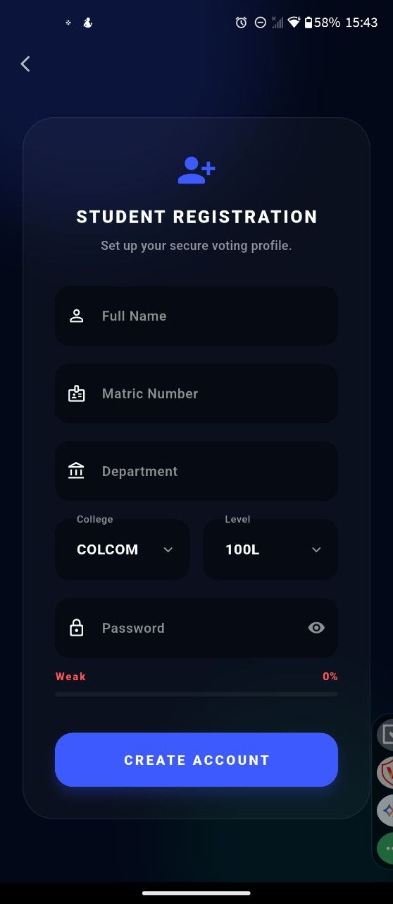

Case study · Mobile app · Vicxien Corp
VICXIEN Votes:
one student, one verified ballot.
A student election app for McPherson University. The hard part of digital voting isn't the ballot screen. It's proving that every vote came from a real student, on their own phone, exactly once, and being able to show the result afterwards.
- Role
- Design, engineering, deployment
- Stack
-
 Flutter
Flutter
 Firebase
Firebase
 Cloudinary
Cloudinary
- Client
- McPherson University
- Source
- Private (client work)
01 / The voting path
Four checks between a tap and a counted vote
Each step closes a specific way people cheat in student elections: borrowing a friend's login, voting from someone else's phone, or tapping submit twice.
-
Step 1
Prove it's you
Before the ballot opens, the phone asks for the student's fingerprint, face or screen lock. A phone with no lock set up can't vote at all.
-
Step 2
On your own phone
Each matric number is bound to one device at registration. Signing in from a different phone doesn't let you vote.
-
Step 3
Exactly once
The ballot is recorded inside a single Firestore transaction that checks whether this student has already voted in this election. A second attempt, even a double tap, is rejected.
-
Step 4
Keep a receipt
The student gets a receipt code built from a SHA-256 hash of the vote, and the same code goes into the election's audit trail, so a disputed ballot can be checked later.
What the student sees after voting
VX-3F9A1C0B7E2D
Example receipt code
02 / Student side
The screens students use

Register
Matric number, password and device binding in one step.

Sign in
Passwords are stored as salted PBKDF2 hashes, never as text.

Dashboard
Open elections, a countdown to closing, and the candidates.

Inbox
Push notifications and an inbox for verification and election updates.
03 / Electoral committee side
Running the election, not just the ballot
The committee runs everything from inside the app, so nobody needs a developer on election day.
Election setup
Create an election, set when it opens and closes, and add candidates with photos for each post.
Voter register
Import eligible students from a CSV file and manage who can vote.
Live results
Results and turnout charts update while voting is still open.
Audit log
Every ballot is logged, and a live ticker shows each one arriving as a hash code and timestamp, never as a name.
PDF report
One tap produces a printable result sheet, grouped by post and ranked by votes, with the audit trail at the bottom.
Remote admin lock
The admin PIN lives in Firestore, so it can be changed remotely without shipping a new version of the app.
Need something like this?